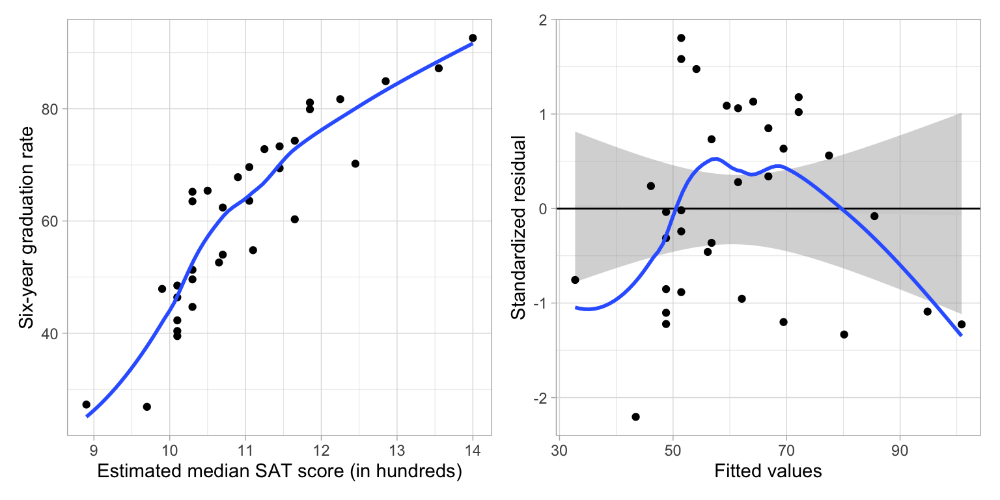
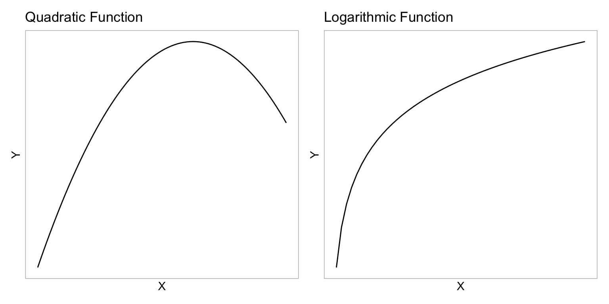
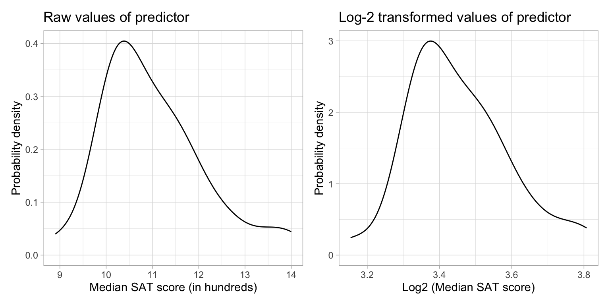
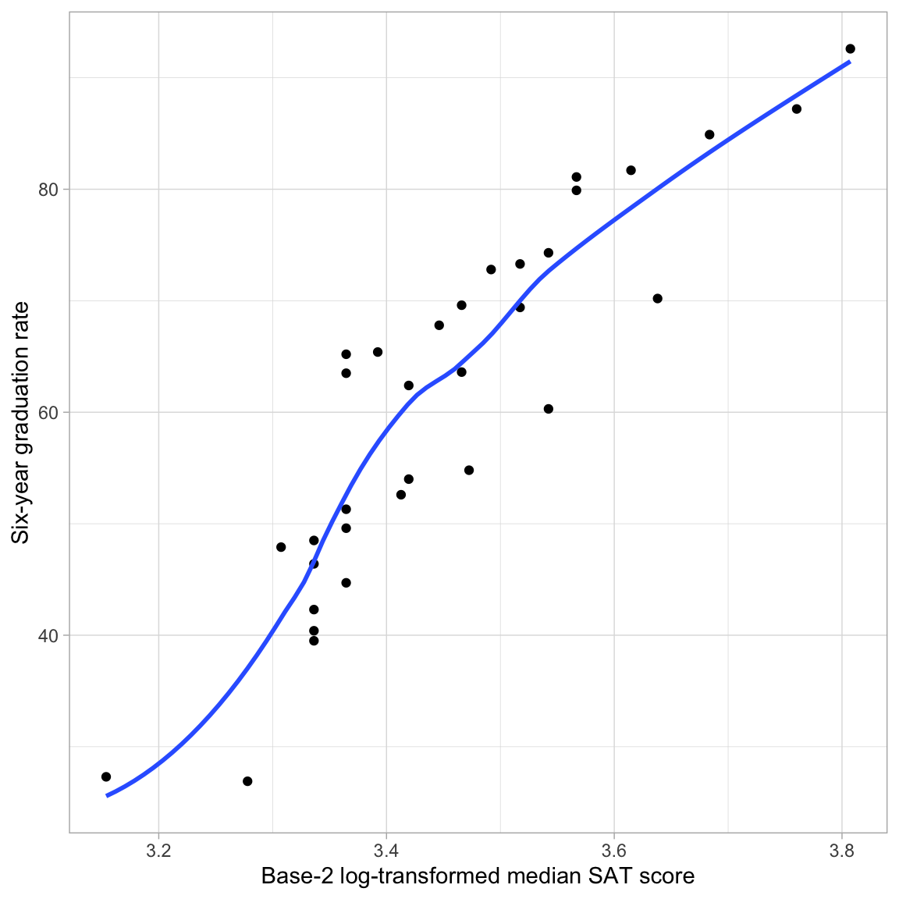
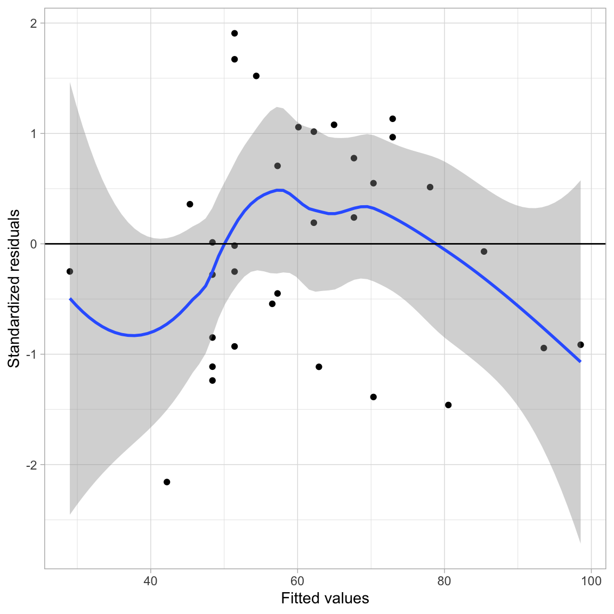
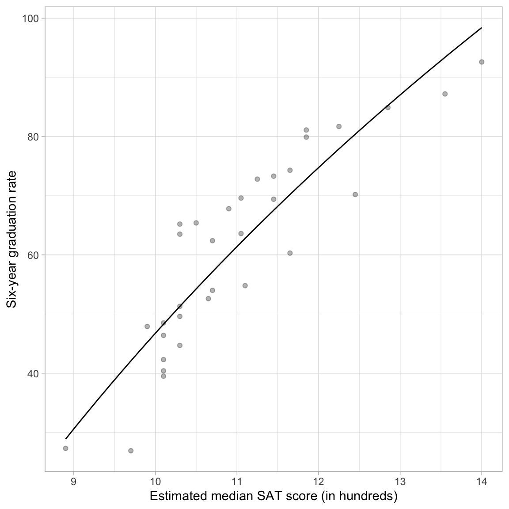
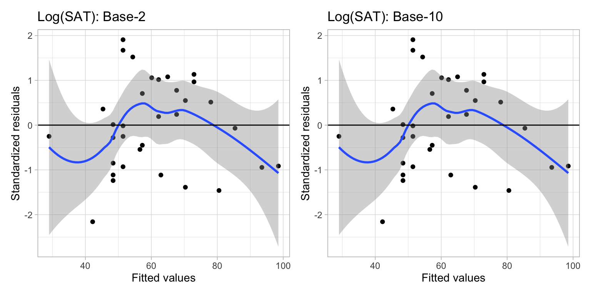
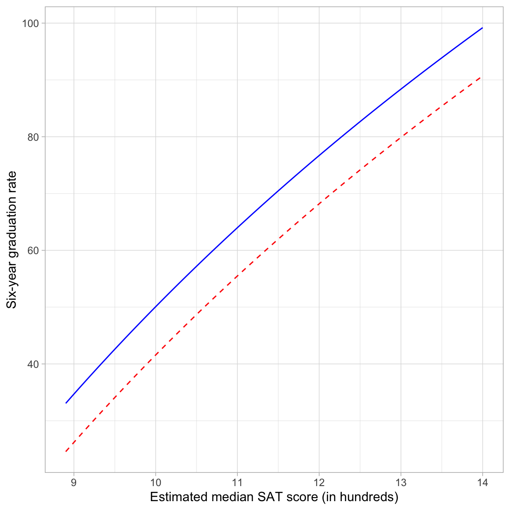
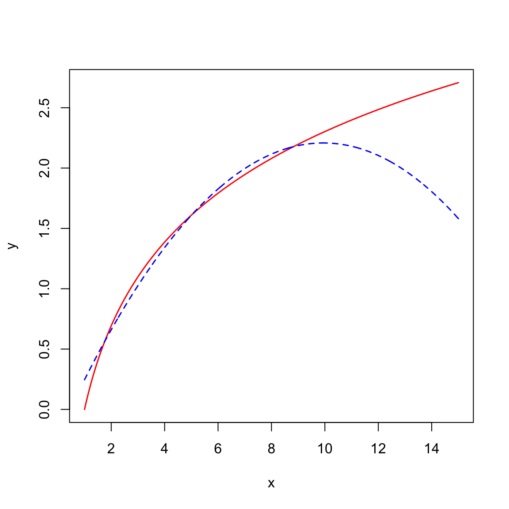
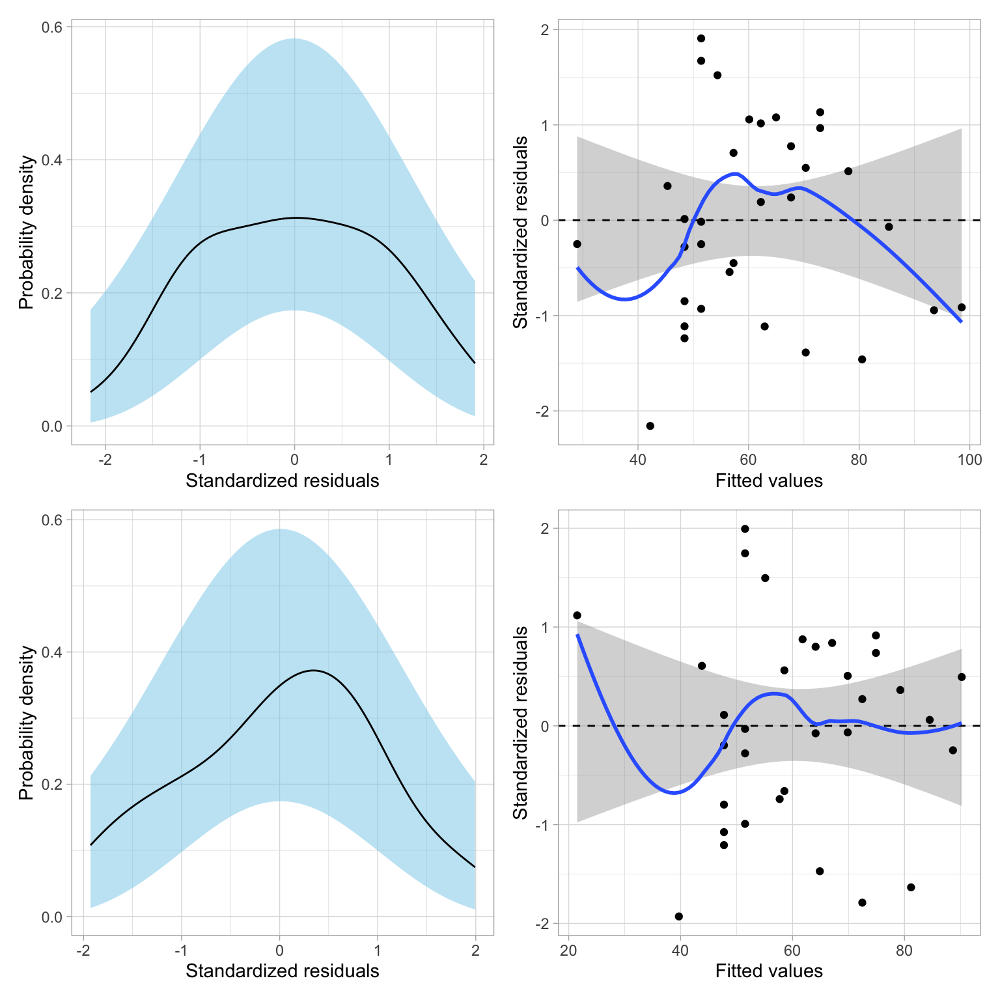

Log-Transforming the Predictor
Preparation
In this set of notes, you will learn another method of dealing with nonlinearity. Specifically, we will look at log-transforming the predictor in a linear model. To do so, we will use the mn-schools.csv dataset:
Our goal will be to re-visit if (and how) academic “quality” of the student-body (measured by SAT score) is related to institutional graduation rate. Within this work, we will use information theoretic approcaches (namely the AICc and related measures) to evaluate any fitted models.
# Load libraries
library(AICcmodavg)
library(broom)
library(educate)
library(gt)
library(patchwork)
library(tidyverse)
# Read in data
mn = read_csv(file = "https://raw.githubusercontent.com/zief0002/bespectacled-antelope/main/data/mn-schools.csv")
# View data
mnRelationship between Graduation Rate and SAT Scores
In a previous set of notes, we determined that the relationship between SAT scores and graduation rates was curvilinear. We initially saw evidence of this curvilinearity in the scatterplot of graduation rates versus median SAT scores. After fitting a model assuming a linear relationship (syntax not shown), the plot of the standardized residuals versus the fitted values also suggests that the linearity assumption is not tenable.
Code
# Scatterplot
p1 = ggplot(data = mn, aes(x = sat, y = grad)) +
geom_point() +
geom_smooth(method = "loess", se = FALSE) +
theme_light() +
xlab("Estimated median SAT score (in hundreds)") +
ylab("Six-year graduation rate")
# Fit linear model
lm_raw = lm(grad ~ 1 + sat, data = mn)
# Obtain residuals and fitted values
out_raw = augment(lm_raw)
# Check linearity assumptions
p2 = ggplot(data = out_raw, aes(x = .fitted, y = .std.resid)) +
geom_smooth(method = "lm", se = TRUE, color = "lightgrey") +
geom_hline(yintercept = 0) +
geom_point() +
geom_smooth(se = FALSE) +
theme_light() +
xlab("Fitted values") +
ylab("Standardized residual")
# Layout plot
p1 | p2
One way to model this nonlinearity is to fit a model that included a quadratic polynomial effect. Remember that the quadratic function is ‘U’-shaped. In our example, the quadratic term was negative, which creates an upside-down ‘U’-shape. This negative quadratic function is shown in the left-had side of the figure below.
We do not have to use a quadratic function to model curvilinear relationships. We can use any mathematical function that mimics the curvilinear pattern observed in the data.1 One mathematical function that is useful for modeling curvilinearity is the logarithmic function. The logarithmic function is shown in the right-hand side of the figure below.
Code
fig_01 = data.frame(
x = seq(from = -5, to = 3, by = 0.1)
) |>
mutate(y = -(x^2))
p1 = ggplot(data = fig_01, aes(x = x, y = y)) +
geom_line() +
theme_light() +
scale_x_continuous(name = "X", breaks = NULL) +
scale_y_continuous(name = "Y", breaks = NULL) +
ggtitle("Quadratic Function")
fig_02 = data.frame(
x = seq(from = 0.1, to = 5, by = 0.1)
) |>
mutate(y = log2(x))
p2 = ggplot(data = fig_02, aes(x = x, y = y)) +
geom_line() +
theme_light() +
scale_x_continuous(name = "X", breaks = NULL) +
scale_y_continuous(name = "Y", breaks = NULL) +
ggtitle("Logarithmic Function")
# Layout the plots
p1 | p2
These two functions have some similarities. They both model non-linear growth (continuous and diminishing growth). However, in the quadratic function, this growth eventually peaks and then is followed by continuous and increasing loss (parabola; the function changes direction). The logarithmic function, on the other hand, does not change direction—it continues to grow, albeit ever diminishing in the amount of growth.2
As you consider different mathematical functions, it is important to consider the substantive knowledge in an area. For example, while empirically both the quadratic polynomial model and the logarithmic model might both suggest reasonable fit to the data, in this context, the logarithmic model might be a more substantively sound model than the quadratic polynomial model. We would probably expect that the effect of SAT on graduation rate would diminish for schools with higher median SAT scores, but that it wouldn’t actually change direction. (This would mean that at some value, an increase in SAT would be asociated with a lower graduation rate!)
Quick Refresher on Logarithms
The logarithm is an inverse function of an exponent. Consider this example,
\[ \log_2 (32) \]
The base-2 logarithm of 32 is the exponent to which the base, 2 in our example, must be raised to produce 32. Mathematically it is equivalent to solving the following equation for x:
\[ \begin{split} 2^{x} &= 32 \\ x &= 5 \end{split} \]
Thus,
\[ \log_2 (32) = 5 \]
To compute a logarithm using R, we use the log() function. We also specify the argument base=, since logarithms are unique to a particular base. For example, to compute the mathematical expression \(\log_2 (32)\), we use
log(32, base = 2)[1] 5There is also a shortcut function to use base-2.
log2(32)[1] 5Log-Transforming Variables
For our purposes, we need to log-transform each value in a particular variable. Here, we will log-transform the SAT predictor (using base-2). To do this we create a new column called l2sat using the mutate() function.
# Create base-2 log-transformed median SAT scores
mn = mn |>
mutate(
l2sat = log(sat, base = 2)
)
# View data
mnHow does the distribution of the log-transformed variable compare to the distribution of raw SAT values? We can examine the density plot of both the original and log-transformed variables to answer this.
Code
p1 = ggplot(data = mn, aes(x = sat)) +
stat_density(geom = "line") +
theme_light() +
xlab("Median SAT score (in hundreds)") +
ylab("Probability density") +
ggtitle("Raw values of predictor")
p2 = ggplot(data = mn, aes(x = l2sat)) +
stat_density(geom = "line") +
theme_light() +
xlab("Log2 (Median SAT score)") +
ylab("Probability density") +
ggtitle("Log-2 transformed values of predictor")
# Layout the plots
p1 | p2
Comparing the shapes of the two distributions, we see that:
- The original median SAT variable was right-skewed. The log-transformed variable is also right-skewed, although it is LESS right-skewed than the original.
- The scale is quite different between the two variables (one is, after all, log-transformed). This has greatly affected the center (mean) and the variation. After log-transforming, the center and variation are both much smaller.
Logarithmic transformations change the shape, center, and variation of a distribution!
Relationship between Graduation Rate and Log-Transformed SAT Scores
Let’s examine the relationship between graduation rates and the log-transformed SAT scores.
ggplot(data = mn, aes(x = l2sat, y = grad)) +
geom_point() +
geom_smooth(se = FALSE) +
theme_light() +
xlab("Base-2 log-transformed median SAT score") +
ylab("Six-year graduation rate")
The loess smoother suggests that the relationship between graduation rate and the log-transformed SAT scores is roughly linear. By transforming the SAT variable using a nonlinear transformation (log) we have “linearized” its relationship with graduation rates. As such, we can fit a linear model to predict graduation rates using the base-2 log-transformed SAT scores as a predictor.
Fitting the Regression Model
To fit the model, we use the lm() function and input the log-transformed SAT scores as the predictor.
# Fit regression model
lm.log = lm(grad ~ 1 + l2sat, data = mn)Examine the Assumption of “Linearity”
Before examining the coefficients, we can scrutinize the residuals to see whether the log-transformation helped us meet the assumption of linearity. Remember that the linearity assumption implies that the average residual is 0 at each fitted (\(\hat{Y}\)) value. To evaluate this, we will examine a scatterplot of the standardized residuals versus the fitted values. We will do this for a model fitted using the base-2 log-transformed predictor and another fitted using the untransformed (raw) predictor so that we can compare the fit.
# Obtain residuals for log-transformed SAT
out_log = augment(lm.log)
# Check linearity assumptions
ggplot(data = out_log, aes(x = .fitted, y = .std.resid)) +
geom_point() +
geom_smooth() +
geom_hline(yintercept = 0) +
theme_light() +
xlab("Fitted values") +
ylab("Standardized residuals")
While the smoother shows the same overall pattern as it did when we used the untransformed predictor, the line \(Y=0\) is completely encompassed in the confidence envelope for the model using the log-transformed predictor. In the case of the model with the untransformed predictor, the \(Y=0\) reference line was not completely encompassed in the confidence envelope. Because of this, we are more satisfied with the tenability of the assumption that the average residual is 0 at each fitted value for the log-transformed model than with the untransformed model.
When we are trying to decide empirically whether to use a transformed predictor/outcome in our model, it is examination of the residuals that will help us make this decision, not a statistical test.
Interpret the Regression Results
We can now look at the regression output and interpret the results.
# Model-level output
glance(lm.log)Examining the model-level output, we see that differences in \(\log_2(\mathrm{SAT})\) explain 81.13% of the variation in graduation rates. Since differences in \(\log_2(\mathrm{SAT})\) imply that there are differences in the raw SAT scores, we would typically just say that “differences in SAT scores explain 81.13% of the variation in graduation rates.”
Moving to the coefficient-level output,
# Coefficient-level output
tidy(lm.log)We can write the fitted equation as,
\[ \hat{\mathrm{Graduation~Rate}_i} = -306.7 + 106.4\bigg[\log_2(\mathrm{SAT}_i)\bigg] \]
We can interpret the coefficients as we always do, recognizing that these interpretation are based on the log-transformed predictor.
- The intercept value of \(-306.7\) is the predicted average graduation rate for all colleges/universities with a \(\log_2(\mathrm{SAT})\) value of 0.
- The slope value of 106.4 indicates that each one-unit difference in \(\log_2(\mathrm{SAT})\) is associated with a 106.4-unit difference in graduation rate, on average.
Better Interpretations: Back-transforming to the Raw Metric
While these interpretations are technically correct, it is more helpful to your readers (and more conventional) to interpret any regression results in the raw metric of the variable rather than log-transformed metric. This means we have to back-transform the interpretations. To back-transform a logarithm, we use its inverse function; exponentiation.
We interpreted the intercept as, “the predicted average graduation rate for all colleges/universities with a \(\log_2(\mathrm{SAT})\) value of 0”. To interpret this using the raw metric of our SAT attribute, we have to understand what \(\log_2(\mathrm{SAT}) = 0\) is equivalent to in the original SAT variable’s scale. Mathematically,
\[ \log_2 (\mathrm{SAT}) = 0 \quad \mathrm{is~equivalent~to} \quad 2^{0} = \mathrm{SAT} \\ \]
In this computation, \(\mathrm{SAT}=1\). Thus, rather than using the log-transformed interpretation, we can, instead, interpret the intercept as,
The predicted average graduation rate for all colleges/universities with a median SAT value of 1 (which since this is measures in hundreds corresponds to a median SAT of 100) is \(-306.7\). Since there are no colleges/universities in our data that have a median SAT value of 1, this is extrapolation.
What about the slope? Our interpretation was that “each one-unit difference in \(\log_2(\mathrm{SAT})\) is associated with a 106.4-unit difference in graduation rate, on average.” Working with the same idea of back-transformation, we need to understand what a one-unit difference in \(\log_2(\mathrm{SAT})\) means. Consider four values of \(\log_2(\mathrm{SAT})\) that are each one-unit apart:
\[ \begin{split} \log_2(\mathrm{SAT}) &= 1\\ \log_2(\mathrm{SAT}) &= 2\\ \log_2(\mathrm{SAT}) &= 3\\ \log_2(\mathrm{SAT}) &= 4 \end{split} \]
If we back-transform each of these, then we can see how the four values of the raw SAT variable would differ.
\[ \begin{split} \mathrm{SAT} &= 2^1 = 2\\ \mathrm{SAT} &= 2^2 = 4\\ \mathrm{SAT} &= 2^3 = 8\\ \mathrm{SAT} &= 2^4 = 16 \end{split} \]
When \(\log_2(\mathrm{SAT})\) is increased by one-unit, the raw SAT value is doubled. We can use this in our interpretation of slope:
A doubling of the SAT value is associated with a 106.4 percentage point difference in graduation rate, on average.
The technical language for doubling is a “two-fold difference”. So we would conventionally interpret this as:
Each two-fold difference in SAT value is associated with a 106.4 percentage point difference in graduation rate, on average.
To understand this further, consider a specific school, say Augsburg. Their measurement on the raw SAT variable is 10.3, and their log-transformed SAT score is 3.36. Using the fitted regression equation (which employs the log-transformed SAT),
-306.7 + 106.4 * 3.36[1] 50.804Augsburg’s predicted graduation rate would be 50.8. If we increase the l2sat score by 1 to 4.36 (which is equivalent to a raw SAT measurement of 20.6; double 10.3), their predicted graduation rate would be,
-306.7 + 106.4 * 4.36[1] 157.204This is an increase of 106.4 percentage points from the predicted value of 50.8 when the l2sat value was 3.36.
Alternative Method of Fitting the Model
Rather that create the log-transformed SAT score as a new column in the data and then using this column in the model, we can use the log() function directly on the SAT predictor in the lm() computation.3
lm.log = lm(grad ~ 1 + log(sat, base = 2), data = mn)
# Model-level output
glance(lm.log)# Coefficient-level output
tidy(lm.log)Plotting the Fitted Curve
To aid interpretation of the effect of median SAT score on graduation rate, we can plot the fitted curve. Recall that our fitted equation was:
\[ \hat{\mathrm{Graduation~Rate}_i} = -306.7 + 106.4\bigg[\log_2(\mathrm{SAT}_i)\bigg] \]
We can implement this into the geom_function() layer of our ggplot() syntax.
# Plot
ggplot(data = mn, aes(x = sat, y = grad)) +
geom_point(alpha = 0.3) +
geom_function(
fun = function(x) {-306.7 + 106.4*log(x, base = 2)}
) +
theme_light() +
xlab("Estimated median SAT score (in hundreds)") +
ylab("Six-year graduation rate")
Alternative Form of the Fitted Equation
The fitted equation expresses graduation rates as a function of base-2 log-transformed median SAT scores. Alternatively, we can re-write this equation to express graduation rates as a function of raw median SAT scores. Namely,
\[ \hat{Y}_i = \log_2\bigg(2^{\hat\beta_0} \times X_i^{\hat\beta_1}\bigg) \]
Notice that the right-hand side of this expression is a log function; it has the general form of \(Y=\log(\)🦒\()\).4 Remember that this is the continuous decay function we were interested in using to model the curvilinearity shown in the data. The important thing is that this non-linear decay function is mathematically the same as using a the log-transformed predictor to model the outcome with linear model.
\[ \log_2\bigg(2^{\hat\beta_0} \times X_i^{\hat\beta_1}\bigg) \equiv \beta_0 + \beta_1\bigg[\log_2(X_i)\bigg] \]
Practically speaking, this means we can model non-linearity using a linear model. Which means we can use the lm() function and all the other ideas you have learned about linear models (e.g., including covariates, adding interaction effects, assumption checking).
To understand how we re-express in this alternative form, consider the general mathematical expression of the fitted equation:
\[ \hat{Y}_i = \hat\beta_0 + \hat\beta_1\bigg[\log_2(X_i)\bigg] \]
Now we will work through the algebra to relate \(\hat{Y}_i\) to \(X_i\). Because there is a log of X we need to exponentiate both sides of the equation to get back to the raw X.
\[ 2^{\hat{Y}_i} = 2^{\hat\beta_0 + \hat\beta_1\bigg[\log_2(X_i)\bigg]} \]
Then we can use the algebraic rules of exponents and logarithms to re-express this equation.
\[ \begin{split} 2^{\hat{Y}_i} &= 2^{\hat\beta_0} \times 2^{\hat\beta_1\bigg[\log_2(X_i)\bigg]} \\[1ex] 2^{\hat{Y}_i} &= 2^{\hat\beta_0} \times \bigg[2^{\log_2(X_i)}\bigg]^{\hat\beta_1} \\[1ex] 2^{\hat{Y}_i} &= 2^{\hat\beta_0} \times X_i^{\hat\beta_1} \end{split} \]
Now the only problem is that the left-hand side is \(2^{\hat{Y}_i}\) and not \(Y_i\). To fix this we take the logarithm (base-2) of both sides of the equation.
\[ \log_2\bigg(2^{\hat{Y}_i}\bigg) = \log_2\bigg(2^{\hat\beta_0} \times X_i^{\hat\beta_1}\bigg) \]
This gives us an expression of the curve that relates the outcome to the predictor.
Using the Alternative Form of the Fitted Equation with the Example
In our example, the fitted equation can be re-expressed as:
\[ \hat{\mathrm{Graduation~Rate}_i} = \log_2\bigg(2^{-306.7} \times \mathrm{SAT}_i^{106.4}\bigg) \]
We can also use this alternative expression in the geom_function() layer of our ggplot() syntax.
# Plot
ggplot(data = mn, aes(x = sat, y = grad)) +
geom_point(alpha = 0.3) +
geom_function(
fun = function(x) {log(2^-306.7 * x^106.4 , base = 2)}
) +
theme_light() +
xlab("Estimated median SAT score (in hundreds)") +
ylab("Six-year graduation rate")
Different Base Values in the Logarithm
The base value we used in the log() function in the previous example was base-2. Using a base value of 2 was an arbitrary choice. We can use any base value we want. For example, how do things change if we use base-10?
# Create base-10 log SAT scores
mn = mn |>
mutate(
l10sat = log(sat, base = 10)
)
# Examine data
mnComparing the logarithms of the SAT attribute using base-10 to those using base-2 we see that the base-10 logarithms are smaller. This is because now we are using the base of 10 in our exponent (rather than 2). For example, for Augsburg,
\[ 10^{1.013} = 10.3 \]
If we fit a model using the base-10 logarithm5,
lm.log10 = lm(grad ~ 1 + log(sat, base = 10), data = mn)
# Model-level output
glance(lm.log10)Examining the model-level output, we see that differences in \(\log_{10}(\mathrm{SAT})\) explain 81.13% of the variation in graduation rates. Or simply, that differences in SAT scores explain 81.13% of the variation in graduation rates. These model-level results are the same as when we used the base-2 logarithm.
# Coefficient-level output
tidy(lm.log10)The linear form of the fitted equation is,
\[ \hat{\mathrm{Graduation~Rate}_i} = -306.7 + 353.6\bigg[\log_{10}(\mathrm{SAT}_i)\bigg] \]
We could also, alternatively, express the fitted equation in its nonlinear form as:
\[ \hat{\mathrm{Graduation~Rate}_i} = \log_{10}\bigg(10^{-306.7} \times \mathrm{SAT}_i^{353.6}\bigg) \]
While the nonlinear form is useful for understanding that log-transforming the predictor results in a nonlinear function, the linear form of the model is what is most useful for interpreting the effects of SAT on graduation rates. Using the linear form of the fitted equation, we can interpret the coefficients using the base-10 logarithm of SAT scores as:
- The intercept value of \(-306.7\) is the predicted average graduation rate for all colleges/universities with a \(\log_{10}(\mathrm{SAT})\) value of 0.
- The slope value of 353.6 indicates that each one-unit difference in \(\log_{10}(\mathrm{SAT})\) is associated with a 353.6-unit difference in graduation rate, on average.
Better yet, we can back-transform the interpretations so that we are using raw median SAT scores rather than \(\log_{10}(\mathrm{SAT})\) scores.
- The predicted average graduation rate for all colleges/universities with a SAT value of 1 (median SAT score = 100) is \(-306.7\).
- Each ten-fold difference in SAT is associated with a 353.6 percentage point difference in graduation rate, on average.
To further think about the effect of SAT, if Augsburg improved its median SAT score ten-fold (i.e., going from a SAT value of 10.3 to a value of 103) we would predict its graduation rate to go up by 353.6 percentage points!
Comparing the Output from the Two Bases
The model-level information is all the same. Furthermore, the intercepts (and SE and p-value) was the same across both models. The slope estimates and SEs were different in the two models, reflecting the change in scale and interpretation. However, the inferential results (t-value and p-value) are the same for both transformations.
What if we look at the residual fit?
p1 = ggplot(data = out_log, aes(x = .fitted, y = .std.resid)) +
geom_point() +
geom_smooth() +
geom_hline(yintercept = 0) +
theme_light() +
xlab("Fitted values") +
ylab("Standardized residuals") +
ggtitle("Log(SAT): Base-2")
out2 = augment(lm.log10)
p2 = ggplot(data = out2, aes(x = .fitted, y = .std.resid)) +
geom_point() +
geom_smooth() +
geom_hline(yintercept = 0) +
theme_light() +
xlab("Fitted values") +
ylab("Standardized residuals") +
ggtitle("Log(SAT): Base-10")
# Layout
p1 | p2
The residuals fit EXACTLY the same. Why is this? Let’s again use Augsburg as an example. Using the fitted model that employed the base-2 logarithm, we found that Augsburg’s predicted graduation rate was,
\[ \begin{split} \hat{\mathrm{Graduation~Rate}} &= -306.7 + 106.4\bigg[\log_2(10.3)\bigg] \\ &= -306.7 + 106.4\bigg[3.36\bigg] \\ &= 50.8 \end{split} \]
Using the model that employed the base-10 logarithm, Augsburg’s predicted graduation rate would be
\[ \begin{split} \hat{\mathrm{Graduation~Rate}} &= -306.7 + 353.6\bigg[\log_{10}(10.3)\bigg] \\ &= -306.7 + 353.6\bigg[1.01\bigg] \\ &= 50.8 \end{split} \]
Augsburg’s predicted graduation rate is exactly the same in the two models. This implies that Augsburg’s residual would also be the same in the two models. This is true for every college. Because of this, increasing (or decreasing) the base used in the logarithm does not help improve the fit of the model. The fit is exactly the same no matter which base you choose.
The only thing that changes when you choose a different base is the interpretation of the slope. You should choose the base to facilitate interpretation. For example, does it make more sense to talk about a two-fold difference in the predictor? A five-fold difference in the predictor? A ten-fold difference in the predictor?
The Natural Logarithm: Base-e
In our example, neither of the bases we examined is satisfactory in terms of interpreting the effect of median SAT score on graduation rate. Two-fold differences in median SAT scores are very unlikely, to say anything of ten-fold differences.
One base that is commonly used for log-transformations because it offers a reasonable interpretation is base-e. e is a mathematical constant (Euler’s number) that is approximately equal to 2.71828.6 We can obtain this by using the exp() function in R. This function takes e to some exponent that is given as the argument. So to obtain the approximation of e we use
exp(1)[1] 2.718282The base-e logarithm for a number, referred to as the natural logarithm, can be obtained using the log() function with the argument base=exp(1). However, this base is so commonly used that it is the default value for the base= argument. So, if we use the log() function without defining the base= argument, it will automatically use base-e. For example, the natural logarithm of Augsburg’s median SAT score of 1030 can be computed as
log(10.3)[1] 2.332144If we took \(e^{2.332}\) we would obtain 10.3. The natural logarithm even has its own mathematical notation; \(\ln\). For example, we would mathematically express the natural logarithm of 10.3 as
\[ \ln (10.3) = 2.332. \]
Using the Natural Logarithm in a Regression Model
Below we regress graduation rates on the log-transformed SAT scores, using the natural logarithm.
# Fit model
lm.ln = lm(grad ~ 1 + log(sat), data = mn)
# Model-level output
glance(lm.ln)As with any base, using base-e results in the same model-level evidence (\(R^2=.811\), F- and p-values, AIC values).
# Coefficient-level output
tidy(lm.ln)The fitted equation is,
\[ \hat{\mathrm{Graduation~Rate}_i} = -306.7 + 153.6\bigg[\ln(\mathrm{SAT}_i)\bigg] \]
The intercept has the same coefficient (\(\hat\beta_0=-306.7\)), SE, t-value, and p-value as the intercept from the models using base-2 and base-10 log-transformations of SAT. (This is, again, because \(2^0=10^0=e^0=1\).) And, although the coefficient and SE for the effect of SAT is again different (a one-unit change in the three different log-scales does not correspond to the same amount of change in raw SAT for the three models).
So how can we interpret the model’s coefficients?
- The intercept can be interpreted exactly the same as in the previous models in which we used base-2 or base-10; namely that the predicted average graduation rate for colleges/universities with a SAT value of one (median SAT score of 100) is \(-306.7\).
- Interpreting the slope, we could say that an e-fold difference in SAT value is associated with a 153.6-unit difference in graduation rates, on average.
Interpretation Using Percent Change
Consider three schools, each having a median SAT values that differs by 1%; say these schools have median SAT values of 10, 10.1, 10.201. Using the fitted equation, we can compute the predicted graduation rate for each of these hypothetical schools:
\[ \hat{\mathrm{Graduation~Rate}} = -306.7 + 153.6 \bigg[\ln (\mathrm{SAT})\bigg] \]
The SAT values and predicted graduation rates for these schools are given below:
Code
# Create data
tab_05 = data.frame(
sat = c(10, 10.1, 10.201)
) %>%
mutate(
grad = predict(lm.ln, newdata = .)
)
# Create table
tab_05 |>
gt() |>
cols_align(
columns = c(sat, grad),
align = "center"
) |>
cols_label(
sat = md("*SAT*"),
grad = md("Predicted Graduation Rate")
) |>
tab_options(
table.width = pct(40)
)| SAT | Predicted Graduation Rate |
|---|---|
| 10.000 | 46.87784 |
| 10.100 | 48.40581 |
| 10.201 | 49.93378 |
The difference between each subsequent predicted graduation rate is 1.53.
# Difference between predicted value for 10.1 and 10
48.4058 - 46.8778[1] 1.528# Difference between predicted value for 10.201 and 10.1
49.9338 - 48.4058[1] 1.528In other words, schools that have a SAT value that differ by 1%, have predicted graduation rates that differ by 1.53, on average.
Be very careful when you are using “percent difference” and “percentage points difference”. These are two very different things. For example, increasing a graduation rate from 50% to 60% represents a difference of 10 percentage points, but it is a 20% increase!
Mathematically Calculating the Size of the Effect
To understand how we can directly compute the effect for a 1% change in X, consider the predicted values for two x-values that differ by 1%, if we use symbolic notation:
\[ \begin{split} \hat{y}_1 &= \hat\beta_0 + \hat\beta_1\left[\ln(x)\right] \\ \hat{y}_2 &= \hat\beta_0 + \hat\beta_1\left[\ln(1.01x)\right] \end{split} \]
The difference in their predicted values is:
\[ \begin{split} \hat{y}_2 - \hat{y}_1 &= \hat\beta_0 + \hat\beta_1\left[\ln(1.01x)\right] - \left(\hat\beta_0 + \hat\beta_1\left[\ln(x)\right]\right) \\[1ex] &=\hat\beta_0 + \hat\beta_1\left[\ln(1.01x)\right] - \hat\beta_0 - \hat\beta_1\left[\ln(x)\right] \\[1ex] &=\hat\beta_1\left[\ln(1.01x)\right] - \hat\beta_1\left[\ln(x)\right] \\[1ex] &=\hat\beta_1\left[\ln(1.01x) - \ln(x)\right]\\[1ex] &=\hat\beta_1\left[\ln(\frac{1.01x}{1x})\right] \end{split} \]
If we substitute in any value for \(x\), we can now directly compute this constant difference. Note that a convenient value for X is 1. Then this reduces to:
\[ \hat\beta_1\left[\ln(1.01)\right] \]
So now, we can interpret this as: a 1% difference in X is associated with a \(\hat\beta_1\left[\ln(1.01)\right]\)-unit difference in Y, on average.
In our model, we can compute this difference using the fitted coefficient \(\hat\beta_1=153.6\) as
\[ 153.6\left[\ln(1.01)\right] = 1.528371 \]
The same computation using R is
153.6 * log(1.01)[1] 1.528371This gives you the constant difference exactly. So you can interpret the effect of SAT as, each 1% difference in SAT score is associated with a difference in graduation rates of 1.53 percentage points, on average.
Approximating the Size of the Effect
We can get an approximation for the size of the effect by using the mathematical shortcut of:
\[ \mathrm{Effect} \approx \frac{\hat\beta_1}{100} \]
Using our fitted results, we could approximate the size of the effect as,
\[ \frac{153.6}{100} = 1.536 \]
We could then interpret the effect of SAT by saying a 1% difference in median SAT score is associated with a 1.53 percentage point difference in predicted graduation rate, on average.
Including Covariates
We can also include covariates in the model. Below we examine the nonlinear effect of SAT on graduation controlling for differences in sector. To do this, we include a main effect of sector (public) in the model along with the natural log-transformed median SAT scores.
# Fit model
lm.me = lm(grad ~ 1 + public + log(sat), data = mn)
# Model-level output
glance(lm.me)The model explains 86.5% of the variation in graduation rates.
# Coefficient-level output
tidy(lm.me)The linear form of the fitted equation is,
\[ \hat{\mathrm{Graduation~Rate}_i} = -286.1 - 8.5(\mathrm{Public}_i) + 146.0\bigg[\ln(\mathrm{SAT}_i)\bigg] \]
Interpreting each of the coefficients using the raw metric of median SAT value:
- The intercept value of \(-286.1\) is the predicted average graduation rate for all public colleges/universities with a SAT value of 1 (extrapolation).
- Public schools have a predicted graduation rate that is 8.5 percentage points lower, on average, than private schools controlling for differences in median SAT scores.
- Each 1% difference in median SAT value is associated with a 1.46 percentage point difference in predicted graduation rate, on average, after controlling for differences in sector.
Plot of the Fitted Equation
To further help interpret these effects, we can plot the curves resulting from this fitted equation. Now we will have two curves one for public schools and one for private schools. To determine the exact equations for these curves, we will substitute either 0 (for private schools) or 1 (for public schools) into the fitted equation for the public variable.
Private
\[ \begin{split} \hat{\mathrm{Graduation~Rate}_i} &= -286.1 - 8.5(0) + 146.0\bigg[\ln(\mathrm{SAT}_i)\bigg] \\ &= -286.1 + 146.0\bigg[\ln(\mathrm{SAT}_i)\bigg] \\ \end{split} \]
Public
\[ \begin{split} \hat{\mathrm{Graduation~Rate}_i} &= -286.1 - 8.5(1) + 146.0\bigg[\ln(\mathrm{SAT}_i)\bigg] \\ &= -294.6 + 146.0\bigg[\ln(\mathrm{SAT}_i)\bigg] \\ \end{split} \]
We can input each of these fitted equations into a geom_function() layer of our ggplot() syntax.
# Plot
ggplot(data = mn, aes(x = sat, y = grad)) +
geom_point(alpha = 0) +
geom_function( # Private schools
fun = function(x) {-286.1 + 146.0*log(x)},
color = "blue",
linetype = "solid"
) +
geom_function( # Public schools
fun = function(x) {-294.6 + 146.0*log(x)},
color = "red",
linetype = "dashed"
) +
theme_light() +
xlab("Estimated median SAT score (in hundreds)") +
ylab("Six-year graduation rate")
The plot shows the nonlinear, diminishing positive effect of median SAT score on graduation rate for both public and private schools. For schools with lower median SAT scores, there is a larger effect on graduation rates than for schools with higher median SAT scores (for both private and public schools). Note that the curves are parallel (the result of fitting a main effects model) suggesting that the effect of median SAT score on graduation rates is the same for both public and private institutions.
The plot also shows the controlled effect of sector. For schools with the same median SAT score, private schools have a higher predicted graduation rate than public schools, on average. This difference is the same, regardless of median SAT score; again a result of fitting the main effects model.
Using Information Criteria to Adopt a Model
We could use evidence from the information criteria to evaluate the evidence among a set of candidate models, so long as they were fitted with the same data and use the same outcome. For example, consider the following candidate models:
\[ \begin{split} \mathbf{Model~1:~}\mathrm{Graduation~Rate}_i &= \beta_0 + \epsilon_i \\[2ex] \mathbf{Model~2:~}\mathrm{Graduation~Rate}_i &= \beta_0 + \beta_1\bigg[\ln(\mathrm{SAT}_i)\bigg] + \epsilon_i \\[2ex] \mathbf{Model~3:~}\mathrm{Graduation~Rate}_i &= \beta_0 + \beta_1(\mathrm{Public}_i) + \epsilon_i \\[2ex] \mathbf{Model~4:~}\mathrm{Graduation~Rate}_i &= \beta_0 + \beta_1\bigg[\ln(\mathrm{SAT}_i)\bigg] + \beta_2(\mathrm{Public}_i) + \epsilon_i \end{split} \]
where each model has the assumptions that \(\epsilon_i\overset{i.i.d.}{\sim}\mathcal{N}(0,\sigma^2_{\epsilon})\).7
# Fit models (use natural log of SAT)
lm.1 = lm(grad ~ 1, data = mn)
lm.2 = lm(grad ~ 1 + log(sat), data = mn)
lm.3 = lm(grad ~ 1 + public, data = mn)
lm.4 = lm(grad ~ 1 + log(sat) + public, data = mn)
# Table of model evidence
aictab(
cand.set = list(lm.1, lm.2, lm.3, lm.4),
modnames = c("Intercept-only", "Ln(SAT)", "Sector", "Ln(SAT) and Sector")
)The empirical evidence, given the models fitted and the data, overwhelmingly supports Model 4 (the model that includes the effects of median SAT and sector on graduation rates).
Note that this test can help us evaluate whether there is an effect, but CANNOT tell us whether that effect is nonlinear, nor whether a log function is appropriate to model the effect; for that you are reliant on the residuals!
Polynomial Effects vs. Log-Transformations
The inclusion of polynomial effects and the use of a log-transformation was to model the nonlinearity observed in the relationship between SAT scores and graduation rates. Both methods were successful in this endeavor. While either method could be used in practice to model nonlinearity, there are some considerations when making the choice of which may be more appropriate for a given modeling situation.
The first consideration is one of substantive theory. The plot below shows the mathematical function for a log-transformed X (solid, black line) and for a quadratic polynomial of X (dashed, red line).
Code
new = data.frame(x = seq(from = 1, to = 15, by = 0.01))
new$y = log(new$x)
new$quad = -0.21717 + 0.48782*new$x - 0.02453*new$x^2
plot(y ~ x, data = new, type = "l", lwd = 1.5, col = "red")
lines(quad ~ x, data = new, col = "blue", lty = "dashed", lwd = 1.5)
Both functions are nonlinear, however the polynomial function changes direction. For low x-values, the function has a large positive effect. This effect diminishes as the values of X gets bigger, and around \(x=9\) the effect is zero. For larger values of X, the effect is actually negative. For the logarithmic function, the effect is always positive, but it diminishes as X gets larger. (Functions that constantly increase, or constantly decrease, are referred to as monotonic functions.) Theoretically, these are very different ideas, and if substantive literature suggests one or the other, you should probably acknowledge that in the underlying statistical model that is fitted.
Empirically, the two functions are very similar especially within certain ranges of X. For example, although the predictions from these models would be quite different for really high values of X, if we only had data from the range of 2 to 8 (\(2\leq X \leq 8\)) both functions would produce similar residuals. In this case, the residuals would likely not suggest better fit for either of the two models. In this case, it might be prudent to think about Occam’s Razor—if two competing models produce similar predictions, adopt the simpler model. Between these two functions, the log-transformed model is simpler; it has one predictor compared to the two predictors in the quadratic model. The mathematical models make this clear:
\[ \begin{split} \mathbf{Quadratic~Polynomial:~}Y_i &= \beta_0 + \beta_1(X_i) + \beta_2(X_i^2) +\epsilon_i \\ \mathbf{Log\mbox{-}Transform:~}Y_i &= \beta_0 + \beta_1\bigg[\ln(X_i)\bigg] + \epsilon_i \end{split} \]
In the polynomial model, we need to estimate three parameters: an intercept, a slope for the linear term of X, and a slope for the quadratic term of X.(Remember, the quadratic polynomial model is an interaction model.) While the log model only requires us to estimate two parameters (\(\hat\beta_0\) and \(\hat\beta_1\)). If there is no theory to guide your model’s functional form, and the residuals from the polynomial and log-transformed models seem to fit equally well, then the log-transformed model saves you a degree of freedom, and better achieves the goal of parsimony.
From the two models, it is also possible to see that the these are not nested models; by setting one (or more) of the effects in either model to zero, we do not end up with the other model. This means we CANNOT use the likelihood ratio test to compare whether the quadratic model or the logarithmic model is more appropriate. However, we could use information criteria to choose from among these models:
# Fit models
lm.quad = lm(grad ~ 1 + sat + I(sat ^ 2), data = mn)
lm.log = lm(grad ~ 1 + log(sat), data = mn)
# Table of model evidence
aictab(
cand.set = list(lm.quad, lm.log),
modnames = c("Quadratic polynomial", "Log-transformed SAT")
)Here the quadartic model seems more empirically supported, but there is a fair amount of support for the log-model as well. Given this evidence, we probably cannot discern which model is better. (There is a fair amount of model selection uncertainty.8)
As with all decisions from statistical evidence, you must also rely on substantive knowledge and an evaluation of the residuals. Substantively, the quadratic model is less defensible, since it seems unlikely that we would see the graduation rate decreasing for institutions with high SAT scores. It is more likely that the effect of SAT score has less and less impact on graduation rates as it gets larger. In this scenario, the substantive knowledge points to the log model rather than the quadratic model.
We can also examine the residuals for the two models:
Code
# Augment the model
out_quad = augment(lm.quad)
# Evaluate normality
p1 = residual_plots(lm.log)
p2 = residual_plots(lm.quad)
# Layout
p1 / p2
Both models seem tenable based on the residual fit to the assumptions. Given this, the substantive argument, and the parsimony argument (the log model is simpler), I would likely adopt the log model over the quadratic model. You could also make this decision later, after adding other covariates and re-checking the model evidence and residuals for the updated models.
Footnotes
So long as we can ultimately write this function as a linear model, namely, \(Y_i=\beta_0+\beta_1(x_i) + \epsilon_i\).↩︎
Mathematically, the instantaneous derivative of the logarithmic function is is always positive, but it approaches 0 for larger values of x, while that for the quadratic function eventually becomes negative.↩︎
There is also a helper function,
log2(), which is equivalent to using thelog()function with the argumentbase=2. The same model could be fitted using this helper function:lm.log = lm(grad ~ 1 + log2(sat), data = mn).↩︎Here 🦒 is simply a placeholder for the expression \(2^{\hat\beta_0} \times X_i^{\hat\beta_1}\).↩︎
There is also a helper function,
log10(), which is equivalent to using thelog()function with the argumentbase=10. The same model could be fitted using this helper function:lm.log10 = lm(grad ~ 1 + log10(sat), data = mn).↩︎Fun Fact: e also happens to be Andy’s favorite number. Google founders might also enjoy e, as their IPO indicated they were going to raise e-billion dollars (see this Forbes article).↩︎
You could also fit an interaction model for completeness to evaluate whether the SAT effect on graduation rates differs by sector (although we do not do that here).↩︎
In order to determine this we would need more data at higher values of SAT to determine if the graduation rate gets lower or essentially planes off. The lack of data in this range is why we have this model selection uncertainty.↩︎